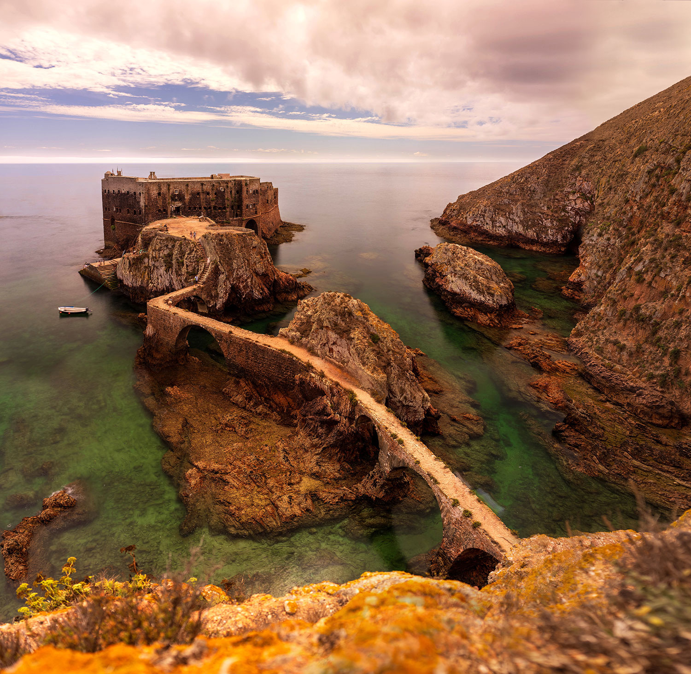
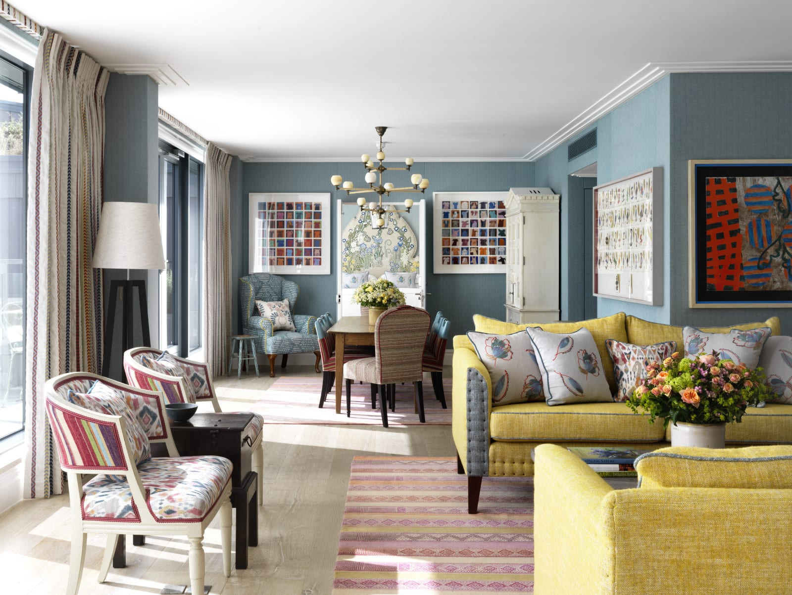
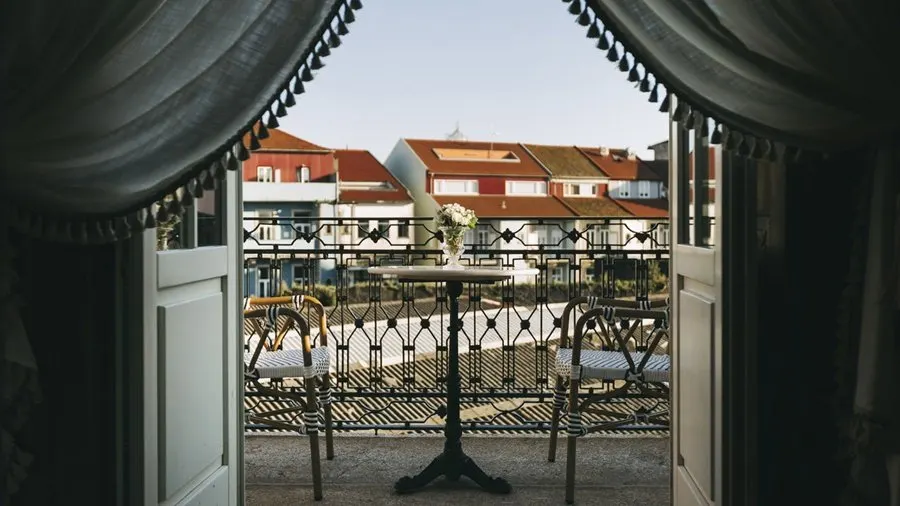
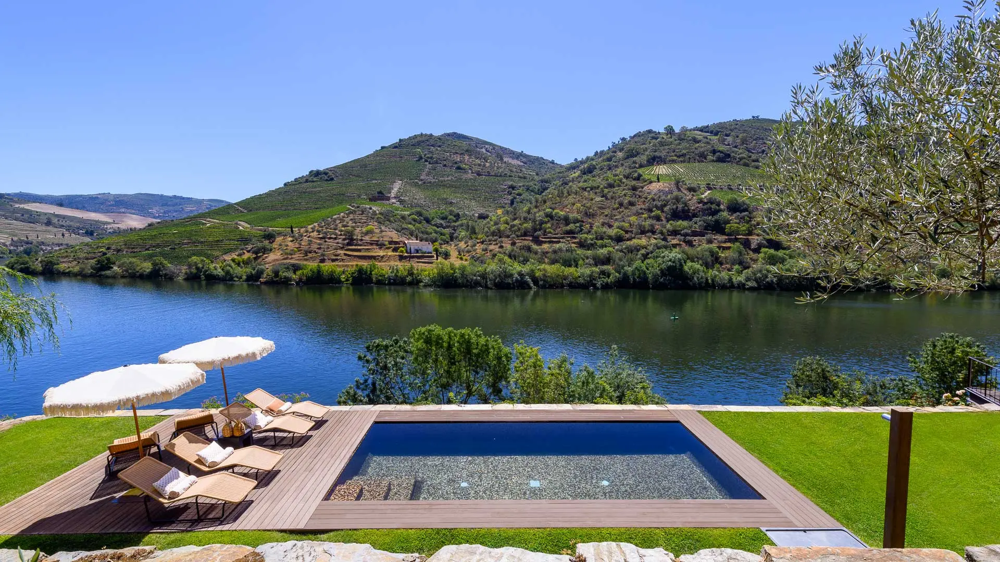
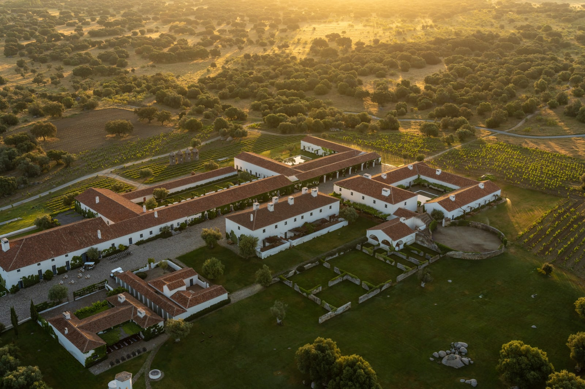
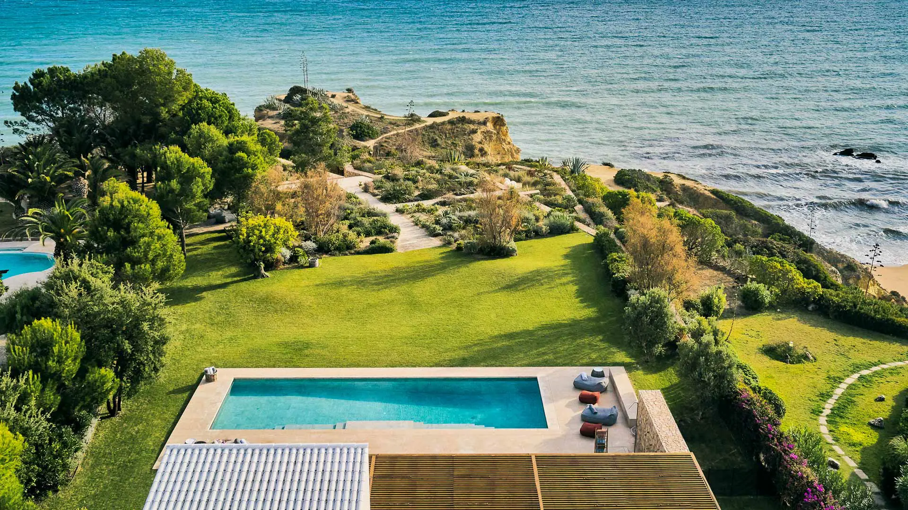

Suites With Keith · A proposal for Aubrey & Kirk Quitter
May 29 to June 12, 2027 · Six travelers · Fourteen nights
Two nights in Soho, then a slow drift south through Portugal: Porto's old town, a private home in the Douro vineyards, a restored farm village in the Alentejo, and five days of beach and pool time in the Algarve before you fly home from Faro. Here is how I'd put it together for the six of you.

The route
Hotel prices below are totals for each stay, quoted today in the hotel's own currency, with every perk I can add through my partnerships. All three hotels are fully refundable until the date noted.

01 · London · May 29 to 31
Ham Yard sits a block from Mayfair but feels tucked away, set around its own tree-lined courtyard so the city noise stays outside. The rooms are bright and full of Kit Kemp's color and pattern, and there's a rooftop garden, a library with an honor bar, a private cinema and a 1950s bowling alley that the kids will love after a long flight.
It's the right base for a short first stop: you can walk to the West End, Covent Garden and Mayfair, and I'll flag your arrival time so the team can try to have rooms ready early.
Your rooms · 2 nights
Included through Suites With Keith
Daily breakfast for everyone, a food and beverage credit in each room, a welcome amenity, plus an upgrade and early check-in or late check-out when available.
Free cancellation until May 28, 2027. I'll ask for the three rooms to be close together.

02 · Porto · May 31 to June 2
Torel Palace is set in a pair of restored mansions just above Porto's historic center, and each room is named for a Portuguese writer or poet. It holds a MICHELIN Key, has a garden with an outdoor pool for the afternoons, and its restaurant BLIND has a MICHELIN star if you want one special dinner in Porto.
Your family gets one of the two-bedroom apartments in the building across the street, so everyone has room to spread out, with your sister and brother-in-law in a room in the main palace.
Your rooms · 2 nights
Included through Suites With Keith
Daily breakfast, a bottle of wine and a Portuguese cheese board on arrival, a welcome drink at the bar, plus an upgrade and early check-in or late check-out when available.
Free cancellation until May 25, 2027.

03 · Douro Valley · June 2 to 5
For three nights in the Douro, I'd love for the six of you to have a private villa: terraced vineyards out the window, your own pool, and long dinners at home after days of wine tastings, a boat on the river and the little train along the water.
Take a look at these options and let me know which ones catch your eye. I'll email the villa team to get exact availability for your dates.
What I'd look for
Close to Pinhão, the heart of the valley, so wineries and the river are minutes away instead of long drives on winding roads
River or valley views, which are the whole point of staying here
A heated pool, since early June evenings can still be cool
Three or four bedrooms, with a twin room for the kids
One I'd look at first
Riverfront Douro Villa with Pool, right on the water with glowing reviews. It's bigger than you need, but the setting is hard to beat.

04 · Alentejo · June 5 to 7
Barrocal is a restored farming village that has been in the same family for more than 200 years, surrounded by olive groves, vineyards and ancient oaks near the medieval hilltop town of Monsaraz. It holds a MICHELIN Key and it's one of the most peaceful places I know in Portugal.
Days here are slow: the granite pool, horseback rides, a Susanne Kaufmann spa, wine and olive oil from the estate, and some of the clearest night skies in Europe for stargazing.
Option A · two separate spaces · 2 nights
Option B · everyone together · 2 nights
Option B keeps all six of you under one roof and costs €500 less.
Included through Suites With Keith
Daily breakfast, a credit for the spa or horseback riding, a tasting of the estate's wine, olive oil and honey, plus an upgrade and early check-in or late check-out when available.
Free cancellation until May 22, 2027.

05 · Algarve · June 7 to 12
The trip ends with a private villa near the beach, so everyone can settle in for the last five nights. I'd stay around Quinta do Lago, Vale do Lobo or Almancil: you're close to the best beaches and restaurants on the coast and about 20 minutes from Faro airport for your flight home.
Take a look at these options and send me your favorites. I'll email the villa team to get exact availability for your dates.
June 10 is Portugal Day, a national holiday, so beaches and restaurants will be livelier than usual. I'll book that dinner well ahead.
What I'd look for
Quinta do Lago, Vale do Lobo, Almancil or the Ria Formosa lagoon, close to Faro
A walk or short drive to beaches like Praia do Ancão and Garrão
A heated pool, since the ocean is still cool in early June
Four bedrooms ideally: two king suites, a twin room for the kids and a spare
One I'd look at first
Luxury Beachfront Villa in Ria Formosa, four bedrooms right on the sand in the lagoon area near Faro.
Getting around
This is the one decision I need from you before I plan the days. Portugal is an easy country to drive, and having your own car gives you freedom in the Douro and the Algarve. A private driver means nobody has to navigate the winding vineyard roads or worry about a wine tasting.
Either way
Skip the car in Porto, where parking is hard and everything is walkable. I'd send a driver to collect you at the airport.
If you drive
Pick up a car as you leave Porto. With six of you and luggage, you'll want a large vehicle or two cars.
If you'd rather be driven
My partner team in Portugal handles every transfer, plus guides, wine tastings and a boat day in the Algarve.
Next steps
1
Look over the three hotels and let me know if you'd like Option A or B at Barrocal. Everything is held at today's rates with free cancellation.
2
Send me your favorite villas in the Douro and the Algarve, and I'll confirm availability with the villa team.
3
Tell me whether you'd like to drive or be driven, and I'll start planning the days around it.
Keith Pence · Suites With Keith
@suiteswithkeith